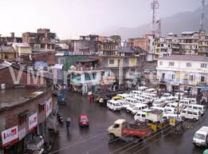
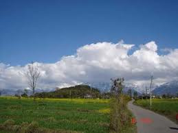
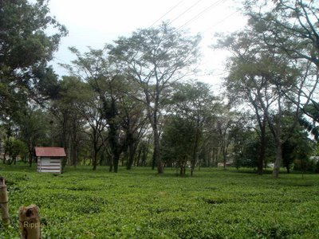
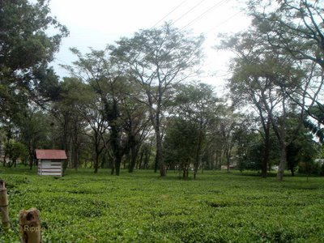
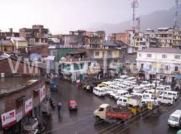
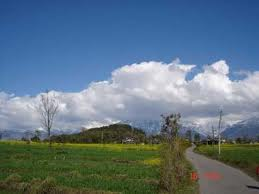
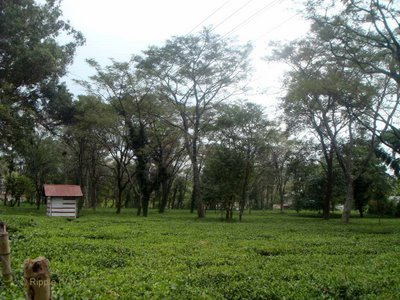

WELCOME TO
KANGRA VALLEY
GEOGRAPHY
Palampur is located at 32.12°N 76.53°E,[4] at a height of 1,220 meters above sea level. It is close to the Dhauladhar Range. It is in the northwestern region of Himachal Pradesh, in north India and is only 30 km from the popular hill station of Dharamshala. Palampur, at a height of 1219 mts., is a main spot in the beautiful valley surrounded by tea gardens and pine trees.
Behind the town stands high ranges of Dhauladhar mountains (white hill of snow), whose tops remain covered for most part of the year. This place is being developed as large tourist centre. A ropeway and an amusement park is also on the way to be established here. An Agricultural University is already functioning near by one Ayurvedic hospital is situated, also one Ayurvedic medical college is there in Paprola is about 10 km away from here some tea factories are also in operation Kangra valley is also known as tea capital of India this tea was quite famous among the British.
On the outskirts of Palampur, at Bandla, Neugal stream is a thin streak running over stony ground far below the cliff. It offers great scenic beauty with snow covered peaks. A recreational spot, called Saurabh Van Vihar, is also located in Bandla, which gets its name from Capt. Saurabh Kalia who hails from Palampur.
Several trek routes lead out of Palampur, particularly over the Dhauladhar Mountains towards the town of Chamba, Himachal Pradesh. Some important treks are over the Sanghar pass to Bharmaur via Holi, the forest trek from Mcleodganj to Treund and from Baijnath over the Jalsu pass to Bharmaur. A four-day trek will lead the traveler to Holi, via Waru La. Twenty-eight kilometers from Palampur is Billing, near Bir, Himachal Pradesh|Bir, an important centre for the adventure sport of paragliding. Paraglider pilots often land near Palampur after cross-country flights starting from Billing. Palampur also has numerous Buddhist monuments and is famous for its Tibetan handicrafts.


 



